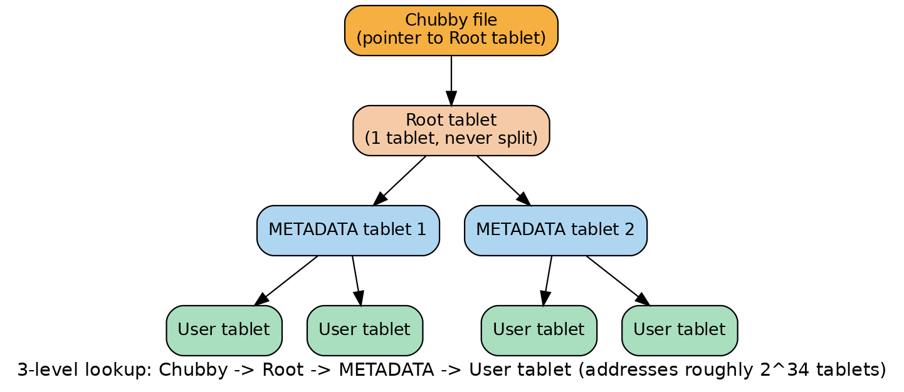
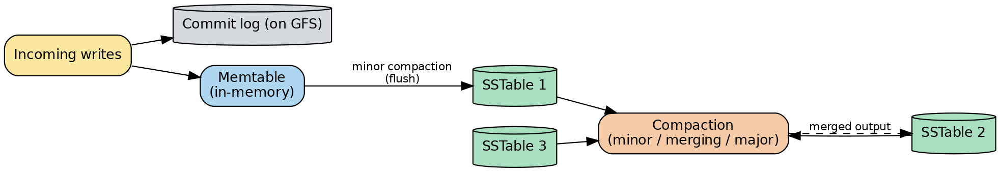
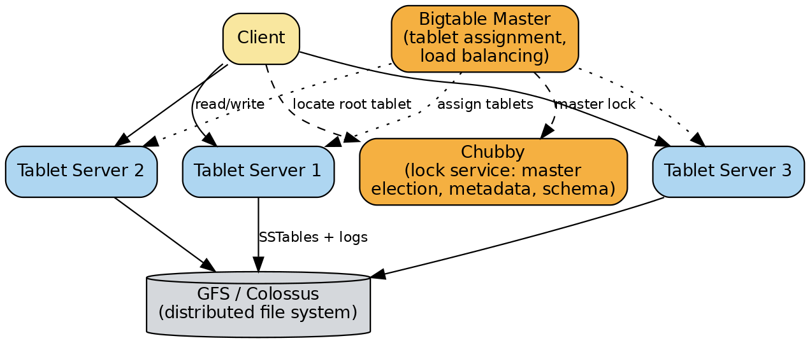

Google Bigtable
A system-design deep dive and interview study guide: internal architecture first, then math, diagrams, real-world usage, trade-offs, and follow-up interview questions.
Overview
Bigtable is Google's internal distributed storage system for structured data: a sparse, distributed, persistent, multi-dimensional sorted map, indexed by (row key, column key, timestamp), where every value is just an uninterpreted byte string. Google built it in 2004–2006 because no off-the-shelf database (relational or otherwise) could scale to petabytes of data across thousands of commodity machines while serving workloads as different as batch web-crawl storage (Google's search index) and latency-sensitive, real-time serving (Gmail, Google Analytics, Google Maps) — all from one system with a single simple API. It was described in the 2006 OSDI (Operating Systems Design and Implementation, a top systems conference) paper "Bigtable: A Distributed Storage System for Structured Data" by Chang, Dean, Ghemawat, Hsieh, Wallach, Burrows, Chandra, Fikes, and Gruber — a paper that went on to directly inspire Apache HBase, Apache Cassandra, and much of the modern "wide-column NoSQL" category. This deep dive goes straight into the internals before pulling back to the higher-level system-design view.
1. Internal Architecture Deep Dive
1.1 The data model, in detail
The formal model. Bigtable's map looks like this: (row:string, column:string, time:int64) → string. A table is a sorted map. Rows are sorted lexicographically (byte-wise dictionary order) by row key, and this ordering is the single most important structural fact about Bigtable — nearly everything else (tablets, locality, hotspotting, range scans) follows from it.
Column families and qualifiers. Columns are grouped into column families — the unit of access control and the unit that must be declared up front (schema). A specific column is addressed as family:qualifier — e.g., family anchor, qualifier cnnsi.com. The qualifier is free-form and can be created on the fly by clients without changing the table schema; only the family needs to pre-exist. This is what makes Bigtable "sparse": a row can have thousands of families/qualifiers defined across the table, but any individual row only stores the cells it actually has values for — unused columns consume zero space in that row.
Versions and garbage collection. Each cell (the intersection of a row and a fully-qualified column) can hold multiple versions, indexed by a 64-bit timestamp (microseconds since epoch by convention, though the field is just an int64 and applications can assign their own meaning to it, e.g., a monotonic sequence number). Versions of a cell are stored in decreasing timestamp order, so the newest version is always read first. Per-column-family garbage-collection settings let you keep only the last N versions, or only versions younger than some age, so old data is reclaimed automatically (during compaction — see 1.5).
Worked example — "Webtable" (storing crawled web pages), straight from the original paper:
| Row key (reversed URL) | contents: | anchor:cnnsi.com | anchor:my.look.ca |
|---|---|---|---|
com.cnn.www | t3: "<html>...CNN..." t5: "<html>...(older)" t6: "<html>...(older)" | t9: "CNN" | t8: "CNN.com" |
Key things this example illustrates:
- The row key is
com.cnn.www— the URLwww.cnn.comwritten with its domain components reversed. This groups all pages from the same site (and subdomains) into physically adjacent rows, because lexicographic order will placecom.cnn.www/sports,com.cnn.www/world, etc. right next tocom.cnn.wwwin row-key space. That locality makes host-scoped analysis and compression far more efficient (see locality groups and compression, 1.7). contents:is a column family with an implicit, empty qualifier, holding multiple timestamped versions of the page's HTML — one per crawl.anchor:is a column family where each distinct linking site becomes its own qualifier (anchor:cnnsi.com,anchor:my.look.ca, ...) — this is the "sparse, dynamic columns" pattern: there could be millions of possible qualifiers underanchor:, but a given row only stores the ones that actually apply to it.- A client library call to write this looks like
RowMutation r1(T, "com.cnn.www"); r1.Set("anchor:www.c-span.org", "CNN"); r1.Delete("anchor:www.abc.com"); Apply(&op, &r1);— Bigtable supports atomic single-row read-modify-write transactions, but (importantly, revisited in section 7) no general multi-row transactions.
Why row-key design is the single most important schema decision (hotspotting). Because rows are stored in sorted order and partitioned into contiguous tablets (1.3) purely by row-key ranges, the row key controls two things that pull in opposite directions:
- Locality for reads — rows you'll frequently query together should be adjacent in key space (e.g., reverse-domain URLs, or
LOCATION#TIMESTAMPfor time-series so a location's whole history is one contiguous range). - Load spread for writes — if many clients are all writing rows whose keys share the same (lexicographically early) prefix at the same time — e.g., a literal, monotonically increasing timestamp, or a sequential auto-increment ID, used as the leading part of the key — then all of that traffic lands on whatever single tablet (and therefore single tablet server) currently owns that narrow slice of key space. That single machine becomes a bottleneck no matter how big the rest of the cluster is. This failure mode is called hotspotting.
Classic fixes: reverse or hash the monotonic component, salt the key with a bucket prefix, or promote a high-cardinality field (e.g., a user ID or a device ID) to the front of the key so writes fan out across the whole key space, e.g. WashingtonDC#201803061617 instead of 201803061617#WashingtonDC when you have many locations reporting on the same clock tick — this keeps each location's history contiguous and spreads simultaneous writes from many locations across many tablets.
1.2 Building blocks
Bigtable is not a single monolithic program; it's built out of, and depends on, several other pieces of Google infrastructure.
GFS / Colossus (the storage layer). In the original 2006 design, Bigtable stores everything — SSTable files and commit logs — on the Google File System (GFS), Google's own distributed, replicated file system. Today, production Google/Cloud Bigtable stores data on Colossus, GFS's successor, a more scalable, higher-durability distributed file system. Either way, the critical property Bigtable's architecture depends on is: tablet servers do not own or locally store their data — they hold pointers into files that live in this separate, independently replicated storage layer. That single fact is why tablet reassignment, recovery, and splitting are all cheap metadata operations rather than data-copy operations (more in 1.6).
Chubby (the distributed lock service). Chubby is a highly-available, coarse-grained distributed lock service built on the Paxos consensus algorithm. A Chubby cell normally runs five replicas, one elected master that actively serves requests; the service stays live as long as a majority of replicas can talk to each other. Clients see a small filesystem-like namespace of directories and files, each of which can be locked, and clients can register callbacks for change/expiration notifications. Bigtable leans on Chubby for several genuinely different jobs, all called out explicitly in the original paper:
- Leader election — ensuring there is at most one active Bigtable master at a time (the master grabs a uniquely named Chubby lock at startup; if it ever loses that lock, e.g., due to a Chubby session expiry, it kills itself).
- Bootstrapping tablet location — storing the single file that points at the location of the root tablet (the top of the 3-level lookup hierarchy — 1.3).
- Discovering tablet servers, and detecting tablet-server deaths — each tablet server, on startup, creates and grabs an exclusive lock on a uniquely-named file in a known Chubby directory; the master watches that directory to learn who's alive, and a tablet server that loses its lock (e.g., because of a network partition) immediately stops serving its tablets.
- Storing schema information — the column-family metadata for every table.
- Storing access control lists (ACLs) — who's allowed to read/write/administer each table.
Because so much control-plane state lives in Chubby, an extended Chubby outage makes Bigtable data unavailable — the paper reports measuring this directly across 14 production Bigtable clusters spanning 11 Chubby cells: the average fraction of Bigtable server-hours affected by Chubby unavailability was 0.0047%, with the single worst-affected cluster at 0.0326%. This dependency is one of Bigtable's most-cited architectural trade-offs (see section 7).
SSTable file format. The SSTable ("Sorted String Table") is the on-disk building block for everything Bigtable persists. An SSTable provides a persistent, ordered, immutable map from string keys to string values. Internally, an SSTable is a sequence of fixed-size blocks (64 KB by default, configurable), plus a block index stored at the end of the file; when an SSTable is opened, only that (small) block index is loaded into memory. A key lookup then costs exactly one disk seek: binary-search the in-memory block index to find the one block that could contain the key, then issue a single read for that block from GFS/Colossus (or serve it straight from an in-memory block cache if it was recently read). SSTables can also be loaded entirely into memory for locality groups marked "in-memory" (1.7). Because SSTables are immutable, concurrent reads never need locking, and background housekeeping (compaction) can build new SSTables without disturbing readers of the old ones.
1.3 Tablet location: the three-level hierarchy
A table isn't one giant file — it is dynamically partitioned by row-key ranges into tablets, each by default ~100–200 MB, and a tablet is the unit of distribution and load balancing: at any moment exactly one tablet server serves a given tablet. Finding "which tablet server currently owns the tablet that contains row X" is the single most important lookup in the whole system, and Bigtable solves it with a three-level hierarchy, explicitly analogous to a B+-tree: Level 0 is a single file in Chubby that contains the location of the Root Tablet; Level 1 is the Root Tablet itself (just the first tablet of a special METADATA table, and it is never split, which is what guarantees the hierarchy never grows past 3 levels), which points to the locations of all other METADATA tablets; Level 2 is the rest of the METADATA tablets, where each row stores the location of one user tablet, keyed by (table identifier, tablet's end row); Level 3 is the actual user tablets holding application data.

How a client locates a tablet, precisely:
- The client library keeps a cache of tablet locations it has previously resolved. Most lookups are served straight from this cache with zero network round trips.
- On a cache miss (client has never seen this row-key range) or a cache staleness (the tablet has since moved and the client discovers this only when its cached tablet server rejects the request), the client walks up the hierarchy: read the well-known Chubby file to get the identity/location of the root tablet; read the root tablet to find which METADATA tablet is responsible for the target row range; read that METADATA tablet to get the precise location (which tablet server) of the actual user tablet; contact that tablet server directly for the real read/write.
- Cost: if the client's cache is completely empty, this location algorithm costs 3 network round trips, one of which is the Chubby read. If the cache is merely stale (wrong, not empty), it can cost up to 6 round trips, because a stale entry is only discovered when it's actually tried and rejected — the client then has to re-resolve up the chain. The client also prefetches metadata for more than one tablet whenever it reads from the METADATA table, amortizing this cost across many subsequent lookups. Because tablet locations are cached in memory, no GFS/Colossus accesses are needed just to resolve a location — only Chubby and/or METADATA-tablet reads.
- Why only 3 levels are enough: worked out precisely in the Math section (3.2) — with 128 MB METADATA tablets and ~1 KB per METADATA row, this scheme addresses 234 tablets, i.e. up to 261 bytes (~2 exabytes) of user data, which is why a flat 2-level (Chubby → user tablets) scheme was unnecessary and a 3-level scheme was judged more than sufficient rather than adding a 4th level.
1.4 Tablet serving: memtable, SSTables, commit log
Each tablet, at any moment, is owned by exactly one tablet server. The persistent state that makes up a tablet is: a commit log (a redo/write-ahead log) and a set of SSTables, both living in GFS/Colossus; plus one memtable that lives only in the tablet server's RAM.
Write path, step by step:
- Client sends a mutation (or batch of mutations) directly to the tablet server that owns the target row (located per 1.3).
- The tablet server checks the request is well-formed and that the sender is authorized (permissions come from the ACL stored in Chubby).
- The mutation is appended to the commit log. Bigtable uses a single commit log per tablet server (not one log per tablet) specifically to avoid opening a huge number of small, concurrently-written files in GFS, which performs poorly; mutations for different tablets served by the same tablet server are co-mingled in one physical log file. (This complicates tablet-server failover — see below — but is a deliberate, worthwhile performance trade-off.)
- Only after the write is durably committed to the log does its content get inserted into the memtable — an in-memory, sorted buffer of the most recent mutations. To reduce read/write contention, each memtable row is copy-on-write, so reads and writes can proceed in parallel.
- The write is acknowledged back to the client.
Read path, step by step:
- Client sends a read request (a lookup or a range scan) directly to the owning tablet server.
- The server checks well-formedness/authorization.
- The read is executed against a merged view of the memtable and the sequence of on-disk SSTables that make up the tablet — conceptually a k-way merge over already-sorted structures (this is exactly the read side of a Log-Structured Merge tree, which Bigtable's memtable+SSTable design is explicitly analogous to). To avoid touching every SSTable on every read, the server consults Bloom filters first to skip SSTables that provably don't contain the key (1.7), and serves recently-read blocks from an in-memory block cache rather than re-reading them from GFS/Colossus.

Recovery (what happens when a tablet is (re)assigned to a — possibly new — tablet server): the new server reads the tablet's metadata from the METADATA table, which lists the SSTables that comprise the tablet plus a set of redo points — pointers into whichever commit log(s) may contain not-yet-flushed mutations for this tablet. It loads the SSTables' block indexes into memory and replays (reconstructs) the memtable by applying every logged mutation committed since the redo point. Because commit logs are shared across many tablets on the old server, the new server would otherwise have to read the entire shared log file just to find its tablet's entries; Bigtable avoids this by having recovering servers sort the co-mingled commit-log entries by (table, row, log sequence number), after which all mutations for one tablet become contiguous and can be read with a single efficient sequential pass.
1.5 Compaction: minor, merging, and major
As writes accumulate, the memtable grows, and every SSTable a tablet accumulates is one more structure a read has to merge. Three related background housekeeping processes keep this bounded:
- Minor compaction. When the memtable hits a size threshold, it is frozen, a fresh (empty) memtable is created to absorb new writes, and the frozen memtable is written out as a brand-new SSTable in GFS/Colossus. This (a) shrinks the tablet server's memory footprint and (b) shrinks how much of the commit log has to be replayed if this server crashes, since everything already flushed to an SSTable no longer needs to be replayed from the log. Reads and writes continue uninterrupted while this happens.
- Merging compaction. Every minor compaction produces one more SSTable, and if left unchecked a read would eventually have to merge an unbounded number of them. To bound this, a background merging compaction periodically reads a handful of existing SSTables plus the current memtable and rewrites them into one new, larger SSTable; the inputs can then be discarded.
- Major compaction. A major compaction is a merging compaction that rewrites all of a tablet's SSTables into exactly one SSTable — and it is the only one of the three that actually removes deletion markers ("tombstones"). Non-major compactions can produce SSTables that contain special deletion entries which merely suppress (hide, at read time) older, still-present data sitting in older SSTables — the bytes for deleted/overwritten data are not actually reclaimed until a major compaction runs. Bigtable periodically major-compacts every tablet specifically so that (a) disk space used by deleted data is reclaimed, and (b) deleted data actually, physically disappears from the system in a bounded, predictable time — which matters a great deal for any service with a legal or compliance requirement that "deleted" really means deleted. (Google Cloud's managed Bigtable runs compactions automatically and transparently; a full compaction cycle over a table typically completes on the order of about a week.)
1.6 Tablet splitting and load balancing (the master)
The Bigtable implementation has three major components: a client library, exactly one active master server, and many tablet servers (which can be added/removed dynamically to handle changing load). Critically, the master is not on the read/write data path — clients talk to tablet servers directly for reads and writes; the master only handles the control plane:
- Assigning tablets to tablet servers.
- Detecting tablet servers being added or dying (via the Chubby lock-file mechanism from 1.2): the master periodically polls each tablet server's lock status, and if a server has lost its lock (or is unresponsive), the master itself tries to acquire that server's lock; on success it deletes the server's Chubby file (permanently barring that server from ever serving again without restarting) and reassigns its tablets to other servers.
- Balancing load, and splitting tablets that have grown past the size threshold (~100–200 MB) or that are getting disproportionate traffic, and merging together tablets that have shrunk or gone cold.
- Garbage-collecting obsolete files in GFS/Colossus.
- Handling schema changes: table creation, column-family creation, etc.

Because tablet servers never own the underlying bytes — only pointers to SSTables/logs living in GFS/Colossus — splitting and reassignment are metadata operations, not data-copy operations: splitting a tablet just means writing a new METADATA row describing the split point and updating pointers; moving a tablet to a different server means updating which server's pointer table refers to which SSTables. This is why Bigtable can rebalance a live cluster in seconds rather than the minutes/hours a "physically copy the data" approach would need, and why recovering from a single tablet-server failure is fast (only metadata, not multi-hundred-MB of data, has to move).
1.7 Locality groups, compression, and Bloom filters
Locality groups. Clients can group several column families that are typically accessed together into one locality group; Bigtable then generates a separate SSTable per locality group, per tablet. E.g., in Webtable, page metadata (language, checksums) can be one locality group while the page contents are a different one — an application that only wants metadata never has to read through the (much larger) page bodies. A locality group can also be declared in-memory: its SSTables are lazily loaded into the tablet server's RAM, and once loaded, reads of that data never touch disk at all — useful for small, hot metadata (Bigtable uses this internally for the location column family of its own METADATA table).
Compression. Clients control, per locality group, whether SSTables are compressed and with what codec; the chosen compression is applied per SSTable block (the same 64 KB blocks used for the block index, size is configurable). Historically, many Bigtable applications used a two-pass scheme: a first pass finds long, repeated strings across a large window using a Bentley–McIlroy-style algorithm (Google's internal "BMDiff"), and a second, fast pass compresses the result with a Lempel-Ziv-family compressor Google called "Zippy" — later open-sourced as Snappy. Compression works especially well precisely because of the row-key locality discussed in 1.1: similar rows/columns/versions end up physically adjacent, giving the compressor long, easy-to-find repeats (e.g., successive crawled versions of the same web page, or many pages from the same site).
Bloom filters (named for Burton Bloom). Because a read may in principle need to check every SSTable that makes up a tablet, and most of those SSTables won't be resident in memory, an uncontrolled read could cost one disk seek per SSTable. Bigtable lets clients ask for a Bloom filter to be built for the SSTables of a given locality group; a Bloom filter answers "might this SSTable contain data for this row/column?" with no false negatives but a small, tunable false-positive rate, using only a small, memory-resident bit array. This "reduces the number of disk seeks required for read operations" (the paper's own words), and, notably, means most lookups for a row or column that doesn't exist never touch disk at all — the Bloom filter says "definitely not present" and the SSTable is skipped entirely. (Worked false-positive-rate math in section 3.3.)
2. System Design View: End-to-End Request Walkthrough
2.1 Client read of a single row, cold cache
- Application calls the Bigtable client library:
Get(table, row_key). - Client library checks its local tablet-location cache. Assume it's empty (first request ever, or after a long idle period).
- Client reads the well-known file in Chubby to learn the location of the root tablet. (round trip 1, includes a Chubby RPC — remote procedure call)
- Client contacts the tablet server holding the root tablet (which is really just the first, never-split tablet of the METADATA table) and asks which METADATA tablet covers this table/row range. (round trip 2)
- Client contacts the tablet server holding that METADATA tablet, and reads the row describing the target user tablet — this row's value is essentially "table T, row range [start,end) is served by tablet server S." (round trip 3)
- Client caches this location, then sends the actual
Getrequest directly to tablet server S. (round trip 4 — the real data request; not counted in the paper's "3 round trips," which refers only to the location-resolution phase) - Tablet server S checks the request is well-formed and the caller is authorized (permissions were themselves loaded from Chubby-stored ACLs when the tablet was loaded).
- Tablet server S consults the Bloom filter(s) for the relevant locality group's SSTables to see which SSTables could possibly contain this row/column; SSTables the filter rules out are skipped entirely.
- For each remaining candidate source (the in-memory memtable, plus any SSTables not ruled out), the server binary-searches each SSTable's in-memory block index, does at most one disk seek per SSTable into GFS/Colossus (or hits the block cache), and merges the results — taking the newest timestamped version per the requested read policy.
- Result is returned to the client. On any subsequent read in the same row range, steps 3–5 are skipped entirely because of the cache — this is why the hierarchy's "3 round trips" only happens on a cold or stale cache.
2.2 Client write to a single row
- Application calls
Set/RowMutation.Apply(...)on the client library. - Client library resolves the owning tablet server exactly as in steps 2–6 above (cached after the first time).
- Request arrives at tablet server S; S validates well-formedness and checks the ACL (again, sourced from Chubby).
- S appends the mutation to its commit log (one shared log per tablet server, in GFS/Colossus) and waits for that append to be durably acknowledged by the storage layer.
- Only once the log append is durable does S insert the mutation into its in-memory memtable (copy-on-write per row, so this doesn't block concurrent reads).
- S acknowledges the write back to the client. The write is now durable (survives a tablet-server crash, because it's in the replicated commit log) even though it may not be reflected in an SSTable yet.
- Later, asynchronously: if the memtable has grown past its size threshold, a minor compaction freezes it and flushes it to a new SSTable in GFS/Colossus; independently, background merging and periodic major compactions keep the SSTable count bounded and reclaim space from deletions (1.5). None of this blocks the client — it already got its acknowledgment in step 6.
- Meanwhile, out of band: the Bigtable master is not involved in any of steps 1–7 at all. It only gets involved if S's tablet grows too large and needs to be split (S writes a new METADATA entry marking the split and the master updates assignment/load-balancing state) or if S dies (Chubby lock loss → master detects it → master reassigns S's tablets to other servers, which then replay the shared commit log as described in 1.4's recovery section).
3. The Math
3.1 How many tablets does a 1 PB table need?
Default tablet size is ~100–200 MB. Taking 1 PB (petabyte) = 1015 bytes = 109 MB (since 1 MB = 106 bytes):
At 200 MB/tablet: 109 MB ÷ 200 MB ≈ 5,000,000 tablets (5 million).
So a 1 PB table needs on the order of 5–10 million tablets.
Since each tablet server manages some number of tablets (in practice the paper's benchmark clusters ran with anywhere from tens to 500+ tablet servers, each typically handling dozens to low hundreds of tablets at a time), a table this size implies a cluster with anywhere from hundreds to low thousands of tablet servers, depending on how many tablets each server is configured to hold and how "hot" the data is.
3.2 Addressing capacity of the three-level tablet-location hierarchy
Straight from the paper's own numbers: each METADATA row occupies ~1 KB in memory, and METADATA tablets are capped at 128 MB (a stricter cap than the general 100–200 MB default, chosen deliberately to keep the hierarchy fast).
The root tablet is itself just one (never-split) METADATA tablet, so it too can hold references to 217 METADATA tablets.
Total addressable user tablets = 217 × 217 = 234 tablets (≈ 17.2 billion tablets) — exactly the figure the paper states.
Total addressable bytes, assuming each of those user tablets holds the (128 MB) upper bound used in this derivation: 234 tablets × 227 bytes/tablet (128 MB) = 261 bytes ≈ 2.3 × 1018 bytes ≈ 2.3 exabytes (EB).
That is why two levels (Chubby file straight to user tablets) would not have been enough at Google's scale, but three levels — with no fourth level ever needed — comfortably covers even exabyte-scale tables, which is also consistent with the (much later) public figure that production Bigtable now manages over 10 exabytes of data in aggregate across all tables/clusters.
3.3 Bloom filter false-positive math
For a fixed m/n (bits per key), the false-positive rate is minimized at: kopt = (m/n) · ln(2) → pmin = (1/2)k
Two commonly-quoted, easy-to-remember operating points (solving the above for bits/key at the optimal k):
- Target p = 1% → need ≈ 9.6 bits per key.
- Target p = 0.1% → need ≈ 14.4 bits per key.
That 12 MB sits in the tablet server's RAM and lets it skip disk seeks into an SSTable that might be gigabytes on disk — for a random-read workload against, say, 5 SSTables per tablet, this can turn "5 disk seeks per read" into "~1 disk seek per read plus 4 cheap in-memory Bloom-filter checks," which is exactly the effect the original paper is describing when it says Bloom filters "reduce the number of disk seeks."
3.4 Compression's effect on read latency (illustrative)
Compression trades CPU time for I/O time and bytes transferred.
Cost added: one CPU-side decompression pass over 64 KB, which on modern hardware for a fast codec (Snappy-class) typically costs low single-digit microseconds to a fraction of a millisecond — negligible next to a disk seek (historically ~milliseconds) or even a network hop across a WAN.
Net effect: for random point reads, the win is modest (you still pay a seek, just for fewer bytes); for sequential reads and scans, where you're pulling and decompressing many blocks in a row, the aggregate I/O savings dominate and materially reduce end-to-end latency and increase throughput — consistent with the paper's own benchmark showing scans and sequential reads far outperforming random reads per tablet server (real-world numbers in section 6). (These per-block numbers are an illustrative estimate to build intuition, not a number quoted directly in the paper or Google's docs; the paper does document that compression is automatic/configurable and beneficial precisely when similar data is stored near itself.)
CAP Theorem Placement and the Consistency Model
Within any single Bigtable cluster, Bigtable behaves as a CP system under the CAP theorem (Consistency + Partition tolerance, at the cost of Availability during a partition): every row is served by exactly one tablet server at a time (enforced via the Chubby lock mechanism), so a read or write against a given row always sees a single, authoritative, strongly consistent copy — there is no quorum read/write, no version reconciliation, and no eventual-consistency window within a single cluster. If that one tablet server (or its Chubby lock, or its region of the control plane) becomes unreachable, Bigtable will refuse requests for that row range rather than risk serving stale or conflicting data from two places at once — that's the "sacrifice availability" side of CP. In practice, Google's private, well-engineered network keeps true network partitions rare, so this theoretical CP trade-off rarely shows up as user-visible unavailability — but the Chubby-outage numbers in section 1.2 (0.0047% / 0.0326% of server-hours) are exactly this trade-off made concrete.
The atomicity unit is the single row: single-row read-modify-write sequences are atomic ("single-row transactions"), but Bigtable explicitly does not support general transactions across multiple rows (it only offers an interface to batch writes across rows for network efficiency — that batch is not atomic as a whole).
Modern Google Cloud Bigtable keeps this same strong, single-cluster consistency model, but adds optional cross-region replication by attaching additional clusters to one Bigtable instance. A replicated (multi-cluster) instance is, by default, eventually consistent across clusters — but can be configured, depending on your app profile's routing policy and workload, to provide read-your-writes consistency or even full strong consistency across clusters for specific access patterns.
Real-World Usage
Inside Google (the original system). At the time of the 2006 paper, Bigtable was already used by more than sixty Google products and projects, including Google Analytics, Google Finance, Orkut, Personalized Search, Writely (which became Google Docs), Google Earth, and the storage layer under Google's own web-search index. Other well-documented internal users over the years include Gmail, Google Maps, Google Books search, Blogger.com, Google Code hosting, and YouTube (which used it for things like user-activity storage, metrics, and analytics/reporting dashboards).
Google Cloud Bigtable made a public version of the same underlying system generally available on May 6, 2015, explicitly marketed as "the same database that powers Google Search, Gmail and Analytics." As of public figures from 2024, Bigtable (across Google's internal and external usage) manages over 10 exabytes of data and serves more than 7 billion requests per second.
Open-source counterparts. Apache HBase was built directly on the architecture described in the Bigtable paper — it layers the same data model (table → column family → qualifier → timestamped versions) on top of HDFS (Hadoop Distributed File System, playing GFS's role) and Apache ZooKeeper (playing Chubby's role, also Paxos/ZAB-based coordination). Apache Cassandra is also frequently cited as "Bigtable's data model plus Dynamo's partitioning and replication," though its architecture (masterless, gossip-based, tunable quorum consistency) diverges more from Bigtable than HBase's does. Google Cloud Bigtable itself ships an HBase-API-compatible client, explicitly to make migration from self-managed HBase clusters straightforward, and later added a Cassandra-compatible API path as well.
Trade-offs and Limitations
- Chubby is a systemic dependency, not just "a nice-to-have." Leader election, tablet-server liveness detection, the bootstrap pointer to the root tablet, table schema, and ACLs all live in Chubby. The paper's own measurement — 0.0047% average / 0.0326% worst-case server-hours affected across 14 clusters — shows this is a real, if usually small, systemic risk rather than a purely theoretical one. (Note, importantly: the master being down does not stop reads/writes — only tablet reassignment and schema changes stall — so "Chubby unavailable" and "master unavailable" are two related but distinct failure modes, and the data path is more resilient than the control path.)
- Hotspotting from poor row-key design. Because tablets are contiguous row-key ranges and a tablet is served by one machine, any workload whose row keys share a narrow, sequential prefix at write time (raw timestamps, sequential IDs) can pin all its traffic onto a single tablet server, capping throughput regardless of cluster size. This is a schema design problem, not a bug, but it is the single most common real-world Bigtable/Cloud Bigtable performance issue, and fixing it after the fact generally requires a full table redesign/rewrite (row keys are effectively immutable once data is loaded at scale).
- No multi-row / multi-table ACID transactions. Only single-row read-modify-write sequences are atomic. Any invariant that spans multiple rows (e.g., "debit account A and credit account B atomically") is not natively supported and must be built in the application layer (idempotent retries, compensating writes, or moving that specific workload to a system with multi-row transactions, such as Cloud Spanner or a relational database).
- No secondary indexes or joins in the traditional sense (classic Bigtable/HBase model): access is fundamentally by row key (point lookup) or row-key range (scan); any other query pattern (e.g., "find all rows where column X = value") requires either a full scan, an application-maintained secondary index table, or (in modern Cloud Bigtable) newer features like SQL support/materialized views layered on top — but the underlying storage engine is still single-key-path.
- Schema changes are operationally heavier than in many NoSQL systems: while adding a new column qualifier is free and instantaneous (it's just a new sparse key), decisions like row-key structure and column-family/locality-group boundaries are effectively fixed at write time for existing data.
- Single point of "interest," not literally single point of failure, for the control plane: Chubby itself is a 5-replica, Paxos-based majority system (so it individually tolerates minority failures), and the master is designed to fail over quickly (a new master just re-acquires the Chubby lock and rebuilds in-memory state by scanning tablet-server state); but the design pattern — one active master, one lock service the whole system's bootstrap and liveness detection depends on — is exactly the kind of centralized control-plane dependency system-design interviews like to probe.
Common Interview Questions
com.cnn.www (reversed URL) has a contents: family holding several timestamped HTML snapshots and an anchor: family where each qualifier (e.g. anchor:cnnsi.com) is a distinct site linking to the page, each also versioned by crawl time.LOCATION#TIMESTAMP instead of TIMESTAMP#LOCATION).Key Takeaways
References
- Chang, Dean, Ghemawat, Hsieh, Wallach, Burrows, Chandra, Fikes, Gruber (2006) — "Bigtable: A Distributed Storage System for Structured Data" (OSDI '06 paper; mirror: static.googleusercontent.com copy)
- USENIX — OSDI '06 conference page for the paper
- Google Research — publication page
- Google Cloud — "Bigtable overview" (architecture, tablets, load balancing, consistency model, compression, durability)
- Google Cloud Platform Blog — "Announcing Google Cloud Bigtable" (May 6, 2015 GA announcement)
- Google Cloud Blog — "Celebrating 20 years of Bigtable with exciting announcements at Next" (2024 usage figures: 10+ exabytes, 7B+ requests/sec)
- Wikipedia — "Bigtable" (history, BMDiff/Zippy/Snappy compression detail, HBase/Cassandra lineage)
- Bloom filter false-positive rate derivation and bits-per-key figures — arpitbhayani.me/blogs/bloom-filters and pages.cs.wisc.edu — summary-cache notes
- CAP theorem classification discussion for Bigtable — Splunk — "Learn About CAP Theorem" and Quora — "Where is Google BigTable placed in terms of the CAP theorem?"
- Apache HBase project (open-source Bigtable-model implementation on HDFS/ZooKeeper) — hbase.apache.org